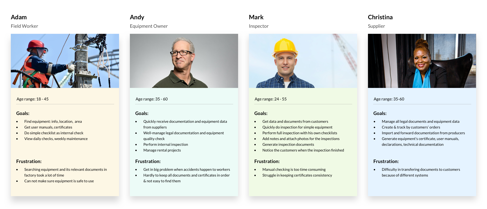
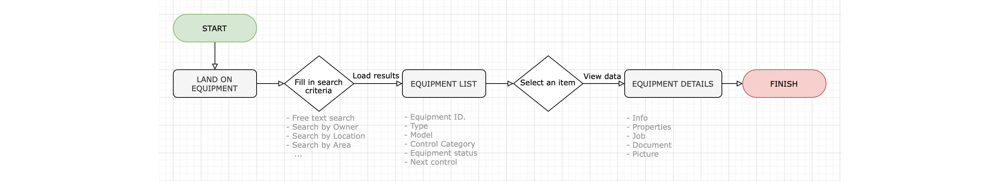
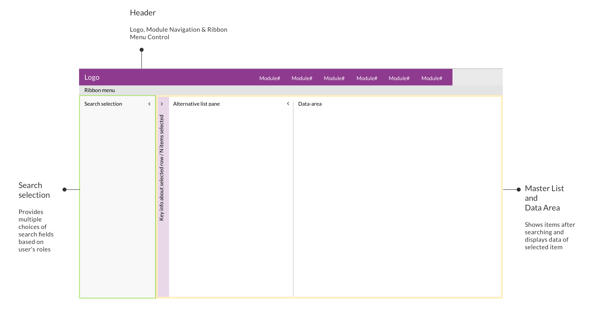
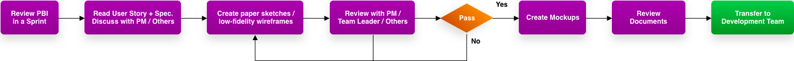
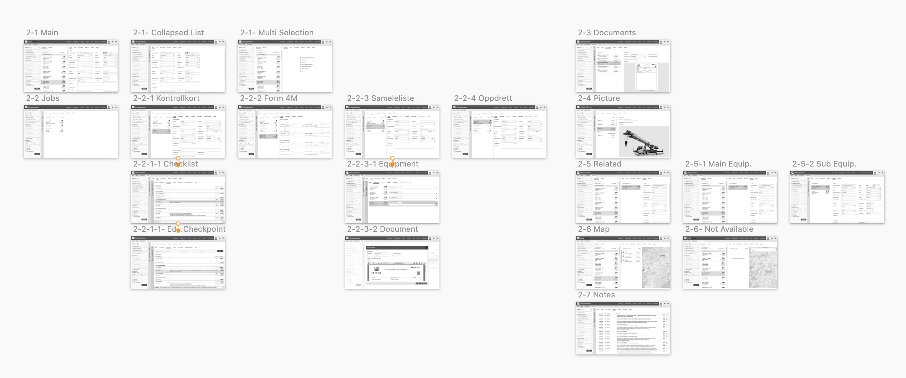
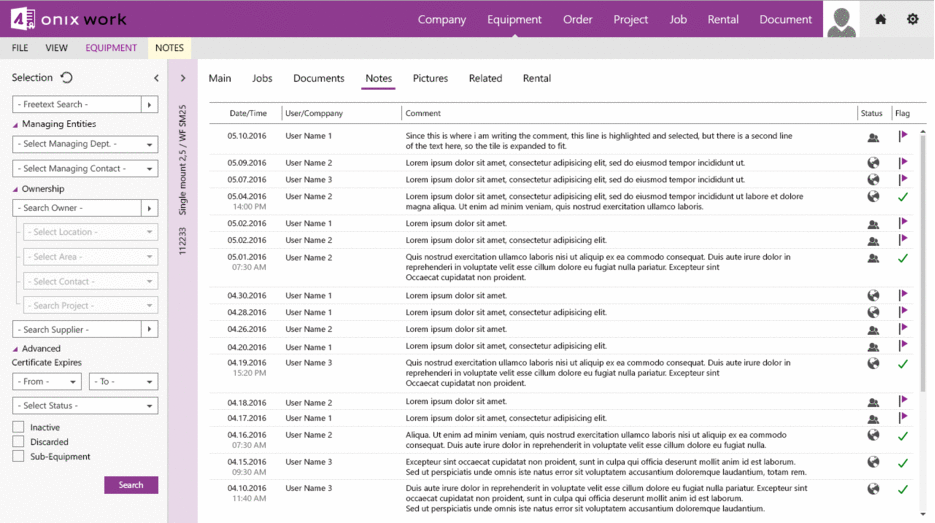

Onix Work
Web Application
Team: Onix AS
My role: UX/UI Designer
In Norway's heavy industry, anyone in a professional relationship with lifting equipment has to know that it's really important to keep the equipment is safe to use and that it has to meet strict regulatory requirements from the government. Onix Work is a complete solution for handling lifting equipment for suppliers, inspectors, equipment owners, and field workers, all parties have legal responsibility for safety checks and documentation. Onix Work helps prevent accidents by identifying and removing non-approved equipment, also eliminate double work, spreadsheets, and paperwork.
...
The process
Project Research > User Personas > Ideate > Design
Project reseach
Understanding the challenge
To make sure every member of the team has general knowledge about the industry, we started some internal kick-off meetings, focused on the business's context, customer's working process, struggles, and their expectations.
- Business Context.
The customers were facing a big problem: Multiple accidents happened to workers which dangerous to their lives and additionally led the employer companies, their businesses to troubles with the law. It made damages to people, time and money. - Problem Statement.
- Missing equipment inspection directed to accidents to the workers.
- Finding, storing and transferring documents between all parties were more complex because of using different systems.
- Delay in delivering documentation decreased productivities.
- Inconsistency documents form increased errors and insufficient efficiency during the working process.
- Reviewed The Current Product.
We had a look through the current software at the time - Equipment Portal - a window form application that was developed and released several years ago. We went through user flows and some key features it provides. - Analyzed Customer Research.
A customer survey and interviews on purpose getting more feedback and customer's expectations were conducted by the Sales & Marketing team in Norway showed that most of the users wanted the innovative application has a friendly UI which similar to Microsoft Outlook 365. Here are the reason:"The app somehow looks old compared to Microsoft Outlook 365 which has a flat design, clean and simple. I have been using this application almost every day in my working life and will be more confident when using something close to it as I can learn fast and efficiently."
User personas
Moving on, I summarised 4 personas which have different needs and different goals. The aim was to improve the user experience for each one of them.
User task flow
Before jumping to design, I decided to focus on the main users task flows. This will ensure the limitation and use cases to achieve a viable and consistent design. I had picked each persona one task flow which was the most important one that they need to achieve.
Ideate
Conceptualising screens
Following on User Personas, based on users roles, needs and their expectations of the UI, our idea was to use the split-screen layout which allows users to scan, select and navigate the list items to be displayed in the details area. The split-screen layout consists of 3 main areas:
- Header offers Logo, Module Navigation & Ribbon Menu Control.
- Search & selection locates on the left-hand side, provides multiple choices of search fields based on user's roles.
- Master list & details area was shown side-by-side on the right-hand side of the layout. The master list contains the items after searching and displays the data of each item right besides when an item was selected. 
Define working modules
Based on all gathered information and user stories, we defined which modules will be applied for each kind of user. According to their requirements, there were six main modules: EQUIPMENT / DOCUMENT / COMPANY / JOB / ORDER / ALERT.
Determine modules' elements
Next, I used card sorting to define which information will be shown for a specific module. On the left hand side is the information architecture of Equipment module that is the most important feature of Onix Work since all kinds of users need to access to EQUIPMENT to look for relevant information such as:
- Worker: look for the equipment's details, location, status, and documents.
- Inspector: find out which equipment is close to the due date of inspection, also look for the equipment's certificates or inspection requests.
- Employer: manage inventory, equipment's documentation, edit equipment's information.
- Supplier: manage inventory, equipment's documentation, edit equipment's information, collecting equipment for orders.
Design
UI Design Patterns
After collecting the information about the solution, analyze each solution in the context of the product, tried and tested through many versions of the user interface design pattern, this is the decided one:

Wireframe
After completing the generic layout concept and the design patterns, followed the software requirements specification documents, I started creating layouts for each module by following the process.
This visual guide represents the skeletal framework of the app. It helped me arrange the interface elements while I'm focusing on the functionality as well as what it looks like overall.
Final design
...
Conclusion
From this project, I learned not to take my own assumption and reminded myself that I am not designing for myself but for the real users. Second, I feel that when working on a project, it would be better to work in a team environment. Therefore, the working process would be a lot more efficient and more complex problem would be solved.